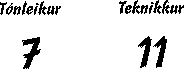

| krydd 3. desember 1997. fløgan fangar við fyrsta eygnabrá. hugdi eina løtu at mynstrinum á permuni, áðrenn tað rann upp fyri mær, at tað er eitt bindimynstur. stuttligt hugskot. havi nevnt tað áður, men eg sigi tað einaferð afturat. gott at lay-out og innihald hóska saman. tónleikurin er serligur. hetta er provokerandi tónleikur, tí at hvørki [messell] ella ova nokta fyri, at hetta eru teldutónar, og er tað nakað, ið kann fáa ilt í ta "etableraðu" tónleikarafjøldina, so er tað teldutónleikur. tí er hetta ógvuliga provikerandi tónar. hefti meg við at løgini minna meg eitt sindur um a-ha. tað eru nakrar reglur í løgunum, sum minna meg sera nógv um norska bólkin. tónleikurin er serligur, tað er einki at siga um tað, antin dámar tær hann ella ikki. Vænti, at um tær ikki dámar tóneikin, so hatar tú hann. Løgini eru ikki "melodiøs" men tey eru spennandi. okkurt akustiskt lag er á fløguni. tey eru væl spæld. kanska fyri at prógva fyri áhoyraranumm, at mennirnir duga at spæla. eingin ivi er um, at tað eru skapandi menn, sum hava gjørt fløguna, tí alt á fløguni ber boð um nýhugsan. tekniskt er hetta ein sera góð fløga. hon er væl miksað, og ljóðbílatið er mjúkt. men samanumtikið, so er hetta uttan iva tónleikur, sum landið als ikki er búgvið til. kanska um 15 ár? |
 |